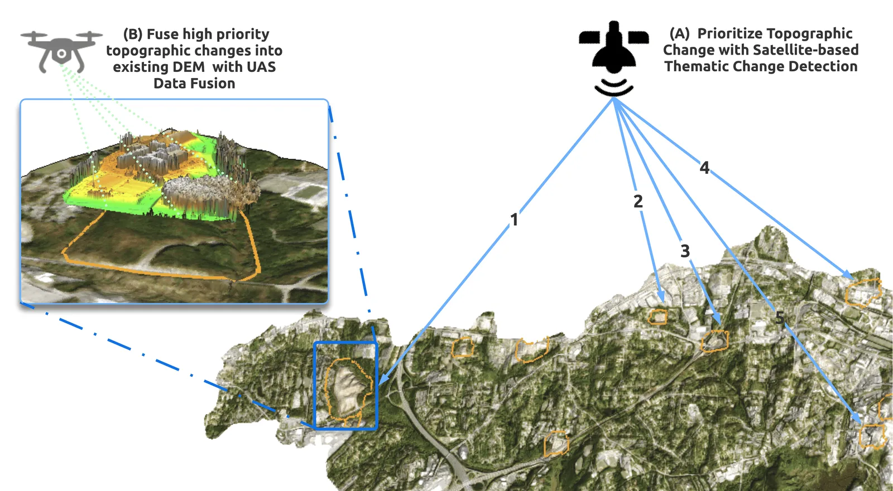
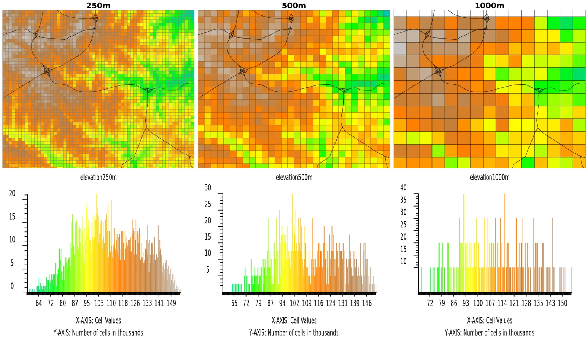
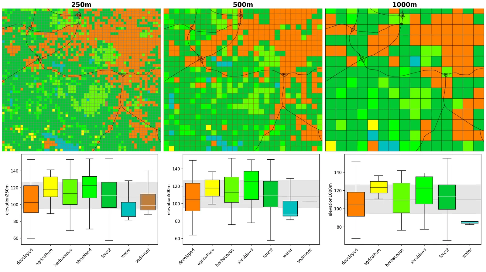
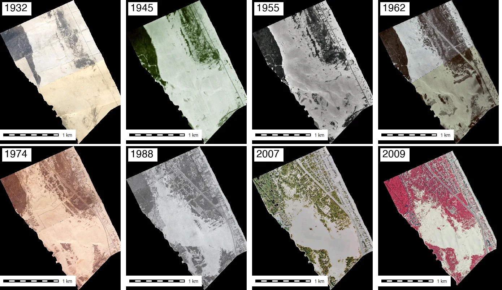
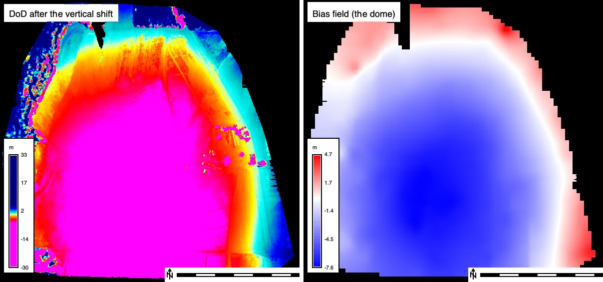
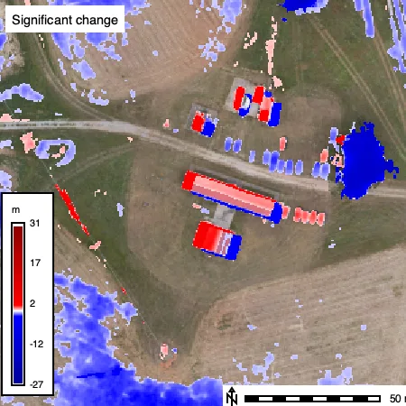
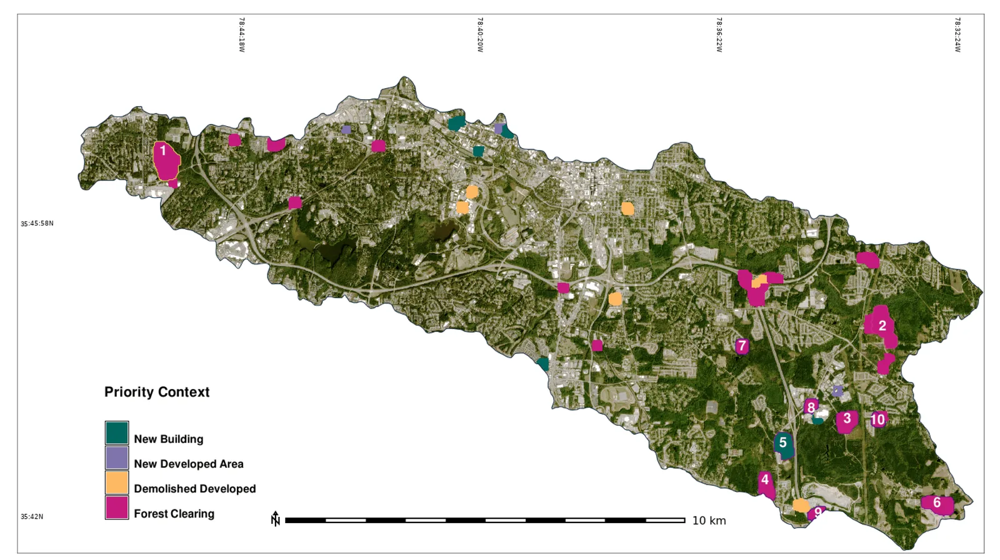
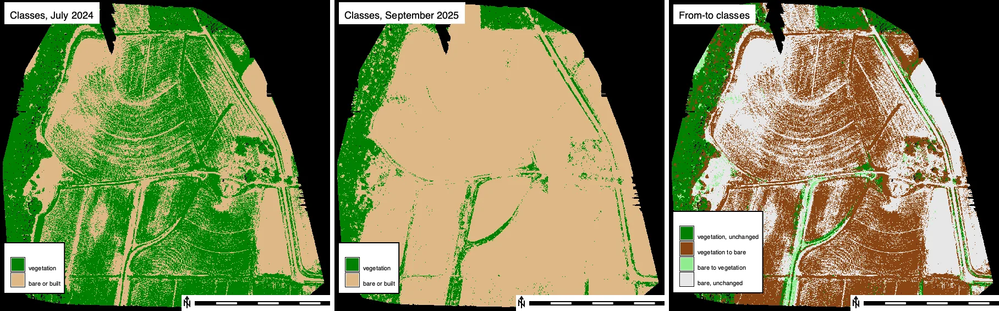
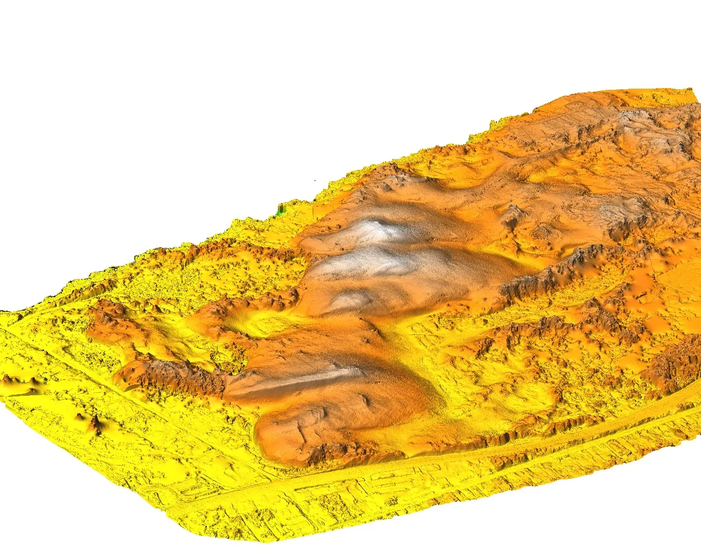

UAS Change Detection Methods
Center for Geospatial Analytics at North Carolina State University
Objectives
- Name the components of a difference between two surveys: real change, registration error, and noise
- Prepare two surveys for comparison: radiometric normalization and horizontal and vertical co-registration
- Detect change before classification: image and index differencing and the DEM of Difference
- Estimate a level of detection from stable surfaces and report significant change
- Compare classified maps with a from-to matrix and explain how their errors combine
Change detection with UAS
Why change detection?
Change detection: identifying differences in the state of a surface or object by observing it at different times (Singh 1989)
- Geomorphic processes: erosion, deposition, landslides, dune migration
- Vegetation: growth, stress, harvest, clearing, regrowth
- Infrastructure: construction progress, stockpiles, demolition
- Events: flood, storm, and fire damage and the recovery afterwards
What UAS add
- Centimeter resolution in the image and in the surface model
- Surveys timed to an event or a season, not to an orbit
- Low cost of repeating a survey
- An orthophoto and a DSM from the same flight
- Local detail for a regional change signal from satellites

Satellite change detection selects the areas a UAS then surveys (White et al. 2022)
Spatial and temporal scale

Elevation at 250, 500, and 1000 m

Land cover at 250, 500, and 1000 m
- A change smaller than a cell, or shorter than the interval between surveys, is not detected
- Resolution, interval, and extent are chosen for the process: a rill, a crop cycle, a subdivision
A long record: Jockey’s Ridge

Aerial photographs, 1932 to 2009: different cameras, films, scales, and seasons
Pre-processing
What a difference contains
Observed difference = real change + registration error + radiometric or vertical bias + noise
- Registration error: the two surveys do not line up, so different places are compared
- Bias: one survey is systematically brighter, or higher, than the other
- Noise: the random part of each measurement
- Pre-processing removes the first two as far as possible; the remainder sets the smallest change that can be reported
Radiometric normalization
- Absolute calibration converts each image to reflectance with panels and a light sensor (Lecture 6A) (Sampath et al. 2023)
- Relative normalization adjusts one image to the other using surfaces that did not change
Pseudo-invariant features: surfaces whose reflectance is assumed constant between dates, such as roads, roofs, and bare rock; the difference of their values is the radiometric offset between the images (Schott et al. 1988)
- Ratios and normalized indices cancel part of the brightness difference; single bands do not
- Shadows and sun angle differ between dates and are not removed by either method
Co-registration
Co-registration: aligning one dataset to another so that the same coordinates refer to the same place
| Method | Works on | Idea |
|---|---|---|
| Ground control points | Images | The same surveyed targets in every flight (Mitasova et al. 2009) |
| Feature matching | Images | Automated tie points between the images (Sedaghat and Mohammadi 2019) |
| Nuth and Kääb | DEMs | Shift from the slope and aspect pattern of the difference (Nuth and Kääb 2011) |
| Iterative closest point | DEMs, point clouds | Rigid fit that minimizes the surface distance (Segal et al. 2009) |
A survey without ground control

2024 reference, 2025 as delivered, and 2025 after a horizontal correction
Measuring registration quality
RMSE: root mean square of the differences at check locations; sensitive to outliers
NMAD: 1.4826 times the median absolute deviation from the median; a robust standard deviation (Höhle and Höhle 2009)
- Measure on stable surfaces: roads, roofs, bare ground
- Hold out part of the stable surfaces from any fitting and report the error there
- Inspect the difference map and its histogram: structure in the map is a registration problem, not noise
Pre-classification methods
Image differencing and ratioing
- Subtract or divide co-registered bands of the two dates: \(\Delta B = B_{t2} - B_{t1}\)
- Unchanged cells cluster around zero (difference) or one (ratio); changed cells lie in the tails
- A threshold separates change from no change
- Chosen from the histogram, or as a multiple of the standard deviation
- Automatic, for example Otsu’s method (Sha et al. 2016)
- Calibrated on stable surfaces, where the difference should be zero
- The result says that something changed and in which direction, not what it changed into
Spectral index differencing

VARI in July 2024, in September 2025, and the difference: \(\Delta VARI = VARI_{t2} - VARI_{t1}\)
DEM of Difference
DEM of Difference (DoD): the later surface minus the earlier one, \(DoD = DEM_{t2} - DEM_{t1}\); negative values are lowering, positive values raising (Wheaton et al. 2010)
- Elevation change per cell; multiplied by the cell area and summed, a volume
- Needs horizontal and vertical co-registration
- With DSMs, the change includes vegetation and structures, not only the ground
- In GRASS:
r.dem.dod dem=dsm_2025_v reference=dsm_2024 output=dod
The dome

DoD after a vertical shift (left) and the bias field fitted on stable cells (right)
Multitemporal transformations
Principal component analysis: the bands of both dates are transformed together; the first components hold what the dates share, later components hold the change
Change vector analysis: the difference of the two spectral vectors of a cell; its length is the amount of change, its direction the kind of change
- Both use all bands at once and suit multispectral data
- The components and directions have to be interpreted for each pair of images
Uncertainty and significant change
Sources of uncertainty
| Source | Effect on the difference |
|---|---|
| Horizontal misregistration | Paired false gains and losses along edges |
| Vertical bias and doming | Smooth false change over large areas |
| Radiometric differences | False index change, uniform or with the sun angle |
| Shadows and occlusion | Local false change near tall objects |
| Timing | Seasonal change reported as land cover change |
| Surface roughness and vegetation | Larger noise where the surface is rough |
Level of detection
Level of detection (LoD): the smallest difference distinguishable from noise at a chosen confidence, \(LoD = z \, \sigma_{DoD}\) with \(z = 1.96\) for 95 %
- From the errors of the two surveys: \(\sigma_{DoD} = \sqrt{\sigma_{1}^2 + \sigma_{2}^2}\) (Brasington et al. 2003; Lane et al. 2003)
- Or measured directly as the NMAD of the DoD on stable surfaces, which includes the remaining registration error
- A uniform LoD for the whole map, or a spatially variable one where the noise differs between surfaces (Wheaton et al. 2010)
- In GRASS:
r.dem.lod dod=dod output=lod method=global stable_mask=stable_check
Significant change

Corrected DoD (left) and the cells beyond the LoD of 0.35 m (right)
Reading the artifacts

- Buildings: a raised band on one side and a lowered band on the other; the building did not move, the surveys are offset
- Cars: lowered where a car stood in 2024, raised where one stands in 2025; real change
- Field: uniform lowering of a few decimeters; the harvested crop
- Tree: lowering over the crown; leaf condition, reconstruction of the canopy, and offset together
Object based and post-classification methods
Object based change detection
- Segment each date, or both dates together, into objects (Lecture 6A)
- Describe each object: mean index, texture, height, shape
- Compare objects between dates: overlap, attribute change, appearance and disappearance
Objects absorb small registration errors and remove the speckle of cell by cell differences; the result depends on the segmentation

Change objects by type (White et al. 2022)
Post-classification comparison
Post-classification comparison: each date is classified on its own and the two maps are cross tabulated; the result is a from-to matrix of class transitions
- Classify each date with the same legend
- Co-register the two class maps
- Cross tabulate: the area of every combination of class at date 1 and class at date 2
- Map the transitions of interest
- Radiometric differences between the dates matter less, because each image is classified separately
- The only method here that says what a place changed from and to
A from-to matrix
| 2024 \ 2025 (ha) | vegetation | bare or built | total 2024 |
|---|---|---|---|
| vegetation | 5.57 | 20.20 | 25.77 |
| bare or built | 1.12 | 18.37 | 19.49 |
| total 2025 | 6.69 | 38.57 | 45.26 |

How classification errors combine
- Each class map has its own errors; a cell is correct in the comparison only if it is correct at both dates
- With independent errors, the accuracy of the comparison is about the product of the two accuracies: 0.9 x 0.9 = 0.81
- Misclassified cells appear as change, so rare transitions are the least reliable
- Reference data for the change classes themselves give the accuracy of the change map (Olofsson et al. 2014)
Three methods on the same site
| Method | Reports | Vegetation loss at Lake Wheeler |
|---|---|---|
| Index differencing | Less green than before | 26.7 ha |
| DEM of Difference with LoD | Surface lower than before | 12.7 ha |
| Post-classification | Vegetation class to bare class | 20.2 ha |
| All three agree | 9.3 ha |
- The methods answer different questions and are expected to differ
- The spectral methods respond to any loss of green; the DoD only where the crop was taller than the LoD
- Agreement between independent methods is the strongest evidence of change
Applications
- Geomorphology: river bank erosion and bar deposition, landslide volumes, dune migration (Fonstad et al. 2013)
- Vegetation: crop growth and harvest, post-fire recovery, invasive species
- Infrastructure and events: construction progress, stockpile volumes, flood and storm damage

Jockey’s Ridge, UAS surface model, 2024
Key terms
Co-registration: aligning one dataset to another so that the same coordinates refer to the same place
Pseudo-invariant features: unchanged surfaces used to normalize brightness between dates
Stable surfaces: unchanged terrain used to measure and correct elevation differences
DEM of Difference: the later surface minus the earlier one
Level of detection: the smallest difference distinguishable from noise at a chosen confidence
From-to matrix: the area of every transition between classes at two dates
Wrap-up
Assignment 6B: UAS change detection